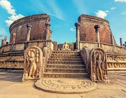
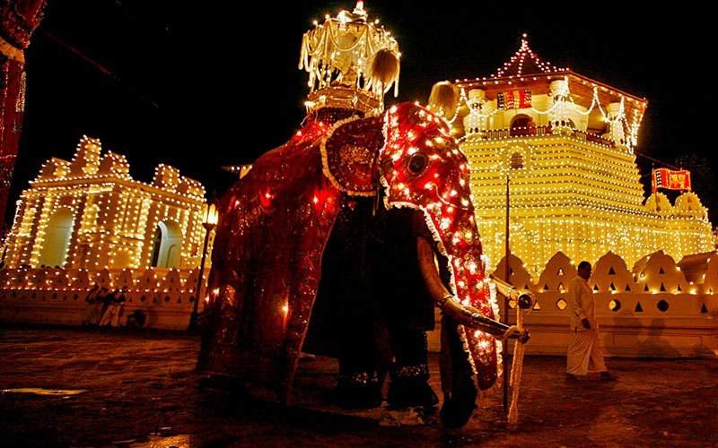

.png)
Sri Lanka is a small island almost like a tiny tear drop that lies in the Indian Ocean which is sometimes known by other names such as " The Lost Paradise ", " The Land Of Serendipity ", " The Resplendent Land " and " The Pearl Of The Indian Ocean " among others by non-natives . Sri Lanka lies to the southwest of the Bay of Bengal and to the southeast of the Arabian Sea. The island seperates itself from the Indian subcontinent by the Gulf of Mannar and the Palk Strait.
The first entries in the Mahavansa or Great History date back to 543BC, which coincides with the arrival of Prince Vijaya in Sri Lanka.
Some 300 years later, commenced the early Anuradhapura Period, with King Devanampiya Tissa as the first ruler.
The late Anuradhapura Period, which began in the year 459, saw the tyrannical reign of King Kasyapa, and the construction of Sigiriya.
The Polonnaruwa period, witnessed the transfer of the capital from Anuradhapura to Polonnaruwa and, in 1505, the Portuguese landed, and
occupied the island’s coastal regions.
Sri Lanka is a country with a unique and a proud historical record of a great civilization, a culture of achievements, spanning over a period of several centuries before and after the birth of Christ, which by comparison cannot be second to any contemporary civilization that existed in the world. Indians, Portuguese, Dutch and British have all left their marks here, making for a delightful mix of ancient cities, monuments and grand colonial architecture.
The culture of Sri Lanka mixes modern elements with traditional aspects and is known for its regional diversity. Sri Lankan culture has long been influenced by the heritage of Theravada Buddhism passed on from India, and the religion's legacy is particularly strong in Sri Lanka's southern and central regions. South Indian cultural influences are especially pronounced in the northernmost reaches of the country. The history of colonial occupation has also left a mark on Sri Lanka's identity, with Portuguese, Dutch, and British elements having intermingled with various traditional facets of Sri Lankan culture. Additionally, Indonesian culture has also influenced certain aspects of Sri Lankan culture. Culturally, Sri Lanka, particularly the Sinhalese people, possesses strong links to both India and Southeast Asia.
Whether it's a home cooked curry or gourmet resort dinner, SriLankan cuisine is a treat for the taste buds. Flavours are exactly what you would expect form
a nation at the historic trade junction between India and Southeast Asia, with abundant use of Indian Spices and seasoning from china and other parts of Asia.
Fish and Seafood feature heavily on menus, and coconut and coconut milk crop up prominently in many dishes. Rice is the centre of most meals. Roti and appam
pancakes made from rice and coconut milk butter are also a staple. Curries typically have more chilli than India, and often include coconut.
Street food is delicious but to avoid stomach upsets, use your judgement wisely and only eat well coocked dishes.
While you can ask for cutlery, it's fun to join the locals and eat with the fingertips of your right hand. Avoid eating with your left hand as it is considered
unclean.
Sri Lanka is the producer of world-renowned Ceylon Tea.Tea is one of the favourite beverages in Sri Lanka and it is the drink of all classes (rich and poor)
of the island. Strong black tea is usually prepared in the average household and mixed with milk and sugar.
King coconut is the most natural healthiest drink in Sri Lanka. It is a variety of coconut with the orange coloured outer layer. They are sold in every corner of the island
from busy streets in Colombo to most remote villages in the country, on trains, religious sites, long distant buses, in restaurants and pretty much everywhere in the country.
Arrack is the most favourite alcohol beverage in Sri Lanka. It is made of distilled toddy or coconut syrup. Some people find it to be similar in taste to
Rum, Gin, and Brandy etc. But, different brands give you a different taste. Mostly the arrack is consumed as a mixture due to the high concentration of alcohol.
It can be mix with almost any beverage. The barmen in hotels have their own mixtures for various arrack cocktails. If you like to make your own cocktail try it with
fruit juice, cola, water, sprite, lime and ginger beer.
Ayurveda is a leading healing method in Sri Lanka and people of the island are known to be using various herbs even before the advent of western medicine. Herbal drinks
are prepared with various types of herbs and they have different taste and aromas. Other than being thirst quencher herbal drinks generate some health benefits. For instance,
some herbal drinks are known to be strong antioxidants and works against cancer cells and dilute cholesterol.